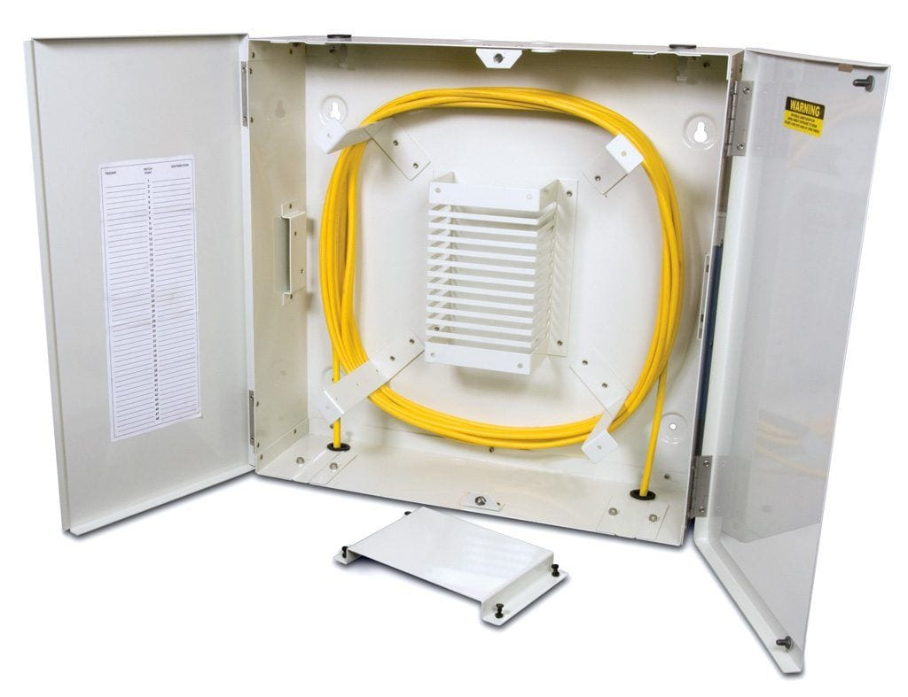
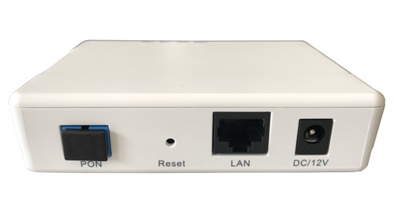
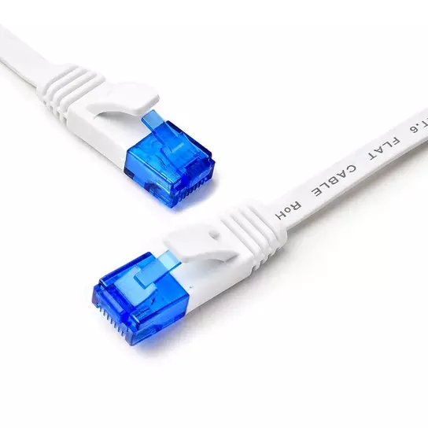

Should I upgrade to a fibre connection?
Many customers want to shift to an optical fibre connection. It certainly is the latest and most reliable form of transportation of signals.
Broadly speaking, an optical fibre based connection has several advantages over a standard copper ethernet connection, such as
- Support for much higher bandwidth rates
- Lesser packet drop probability rate due to immunity from EM interference
- Virtually impossible to be tapped physically (unless you have some very specialized hardware)
- Signal propagation in optical fibre is faster compared to copper wires (Optical signal verses electrical signal)
However, considering the scenario in India, let us re-examine the above points
- Less than 0.1% of users in India use a 1G internet, which is well within the limits of CAT 5e cables.
- Packet drop in Cat 5e cables due to interference is a very rare event. You are more likely to face packet drop due to link congestion, faulty hardware, faulty switch configuration or other human errors. If these underlying causes are not resolved, even optical fibre will not solve the issue.
- As long as you are using HTTPS, wire tapping is not an issue. Also, unless the entire infrastucture is not using optical fibre, then the weakest link still remains open for an attacker.
- Difference in signal propagation is imperceptible for most users. But depending on your hardware and the LCO's hardware, you can slightly reduce your latency. This can be beneficial to people who use latency-sensitive applications, such as online gaming.

An Optical Fibre Storage Enclosure - Needs a lot of space to avoid bends
There are some other negatives of optical fibre as well, such as
- It has a high initial setup cost
- It cannot bend like copper cables, as the medium is not as malleable as copper. You need a proper storage area for the excess cable.
- You need a seperate power point for the Optical Network Terminal (ONU). In our case, an ONU converts an optical signal to an electrical signal which can be understood by a ethernet router.

TP1001-GE -1 GE ONU
However, there are some practical advantages as well
- Lower chance of connection disruption during lightning, since optical fibre does not conduct electricity. But the middleboxes are still suseptible to failure due to lightning.
- Low signal attenuation compared to copper cables (Copper cables are rated for a maximum of 100m). Hence, longer cables can be used, which implies lower number of point of failures.
- Once set, there is much lower maintenance because of overall robustness.
So, switching to fibre has the following REAL benefits to a customer
- Fewer connection disruption in case of inclement weather
- A more reliable connection, since it requires lesser maintenance
- Slightly better latency
- Completely future proof
If your LCO still does not provide optical fibre, you can instead shift to a Cat 5e cable. But it only makes sense if your internet package is rated above 100 Mbps. This is because it's easier and faster for your LCO to upgrade to Cat 5e than optical fibre.

Cat 5e - Good Enough!
Conclusion
I'm not advocating against optical fibre. If your LCO is offering you the chance to upgrade, then go for it. However, understand that an optical connection will not magically solve all your existing problems because they are mostly man-made, barring few nataral phenomenon.
Both ISPs and LCOs need to upgrade their backbone connection with better hardware for their to be any tangible benefit for us.